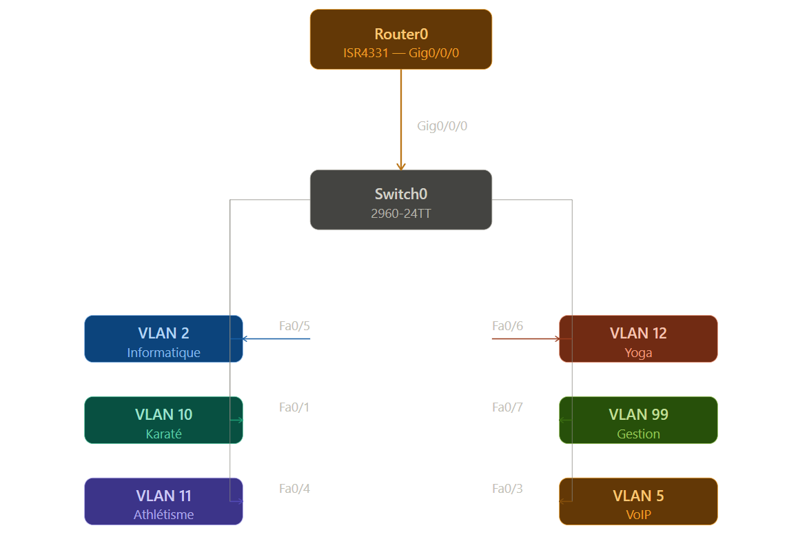
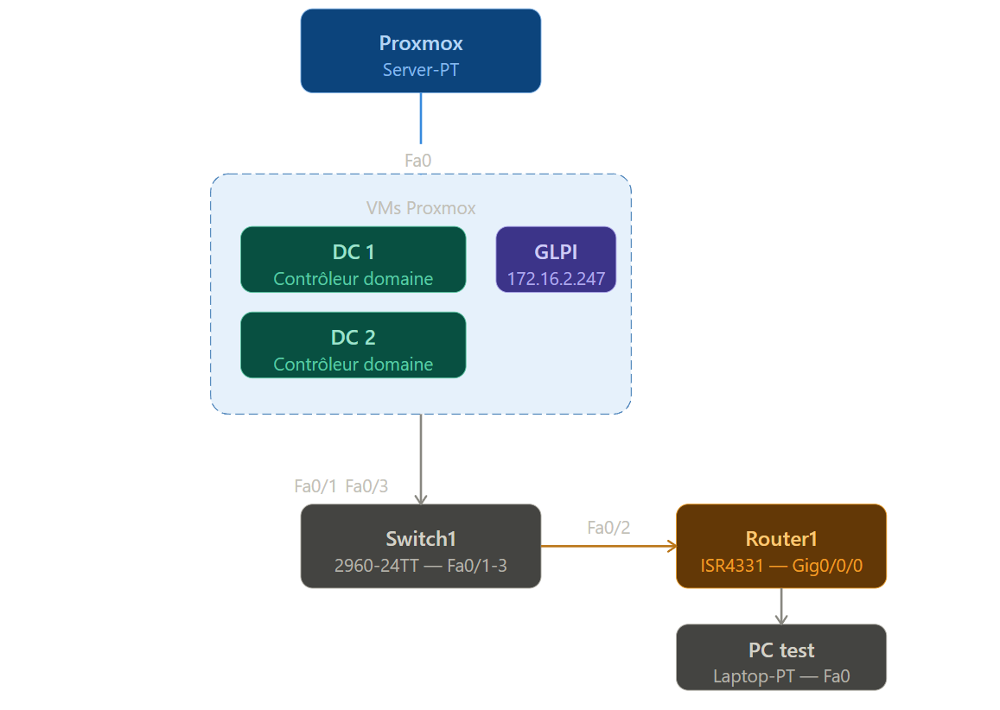

Administration des systèmes et des réseaux
Cette épreuve vise à évaluer l’acquisition des compétences du bloc « Administration des systèmes et des réseaux », notamment :
L’épreuve prend appui sur deux réalisations professionnelles composant le dossier remis par la personne candidate. Ces réalisations mobilisent les ressources décrites dans le référentiel de certification du bloc « Administration des systèmes et des réseaux ».
Première phase – préparation de 30 minutes + entretien de 20 minutes
Deuxième phase – préparation d’1 heure + entretien de 20 minutes
Dans le cadre du projet M2L, j’ai été chargé de mettre en place une infrastructure réseau segmentée afin de résoudre des problèmes de sécurité, de performances et d’administration liés à un réseau unique. Ma mission consistait à créer plusieurs VLANs correspondant aux différents services, configurer les commutateurs et mettre en place le routage inter-VLAN via un routeur Cisco. Cette solution a permis d’isoler les flux, d’améliorer la sécurité et de faciliter la gestion du réseau.
Documentation
Dans ce même contexte M2L, j'ai mis en place une solution de gestion de parc informatique et de support utilisateur avec GLPI, afin de répondre au manque d'outil de suivi des incidents et d'inventaire. J'ai installé un serveur LAMP sous Debian, déployé GLPI, configuré la base de données, intégré l'outil à Active Directory via LDAP et mis en place le système de ticketing ainsi que l'inventaire automatique des machines. Cette solution permet aux utilisateurs de déclarer leurs incidents et aux administrateurs de gérer efficacement le parc informatique.
Documentation
Consultez les fiches détaillées de mes deux réalisations professionnelles :